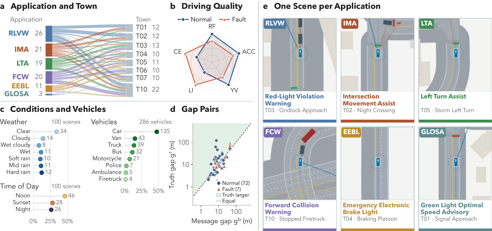
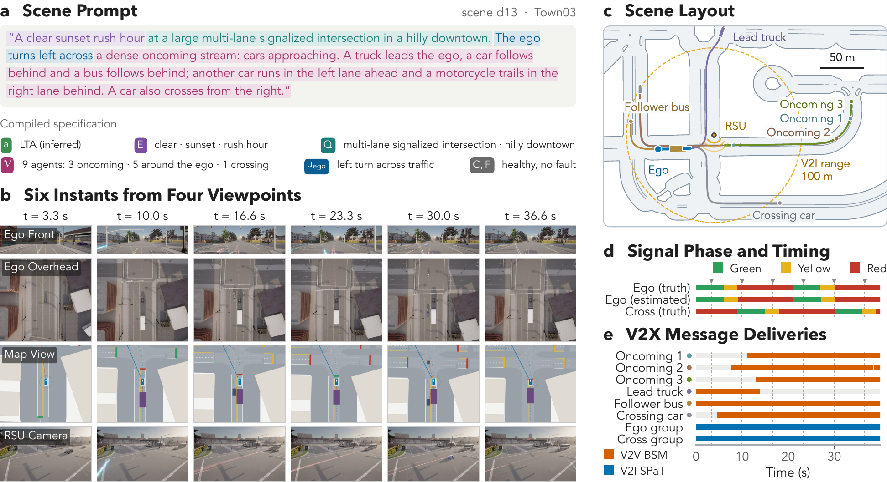
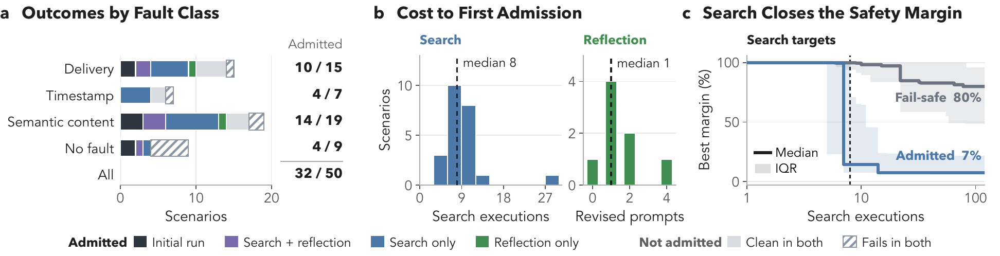
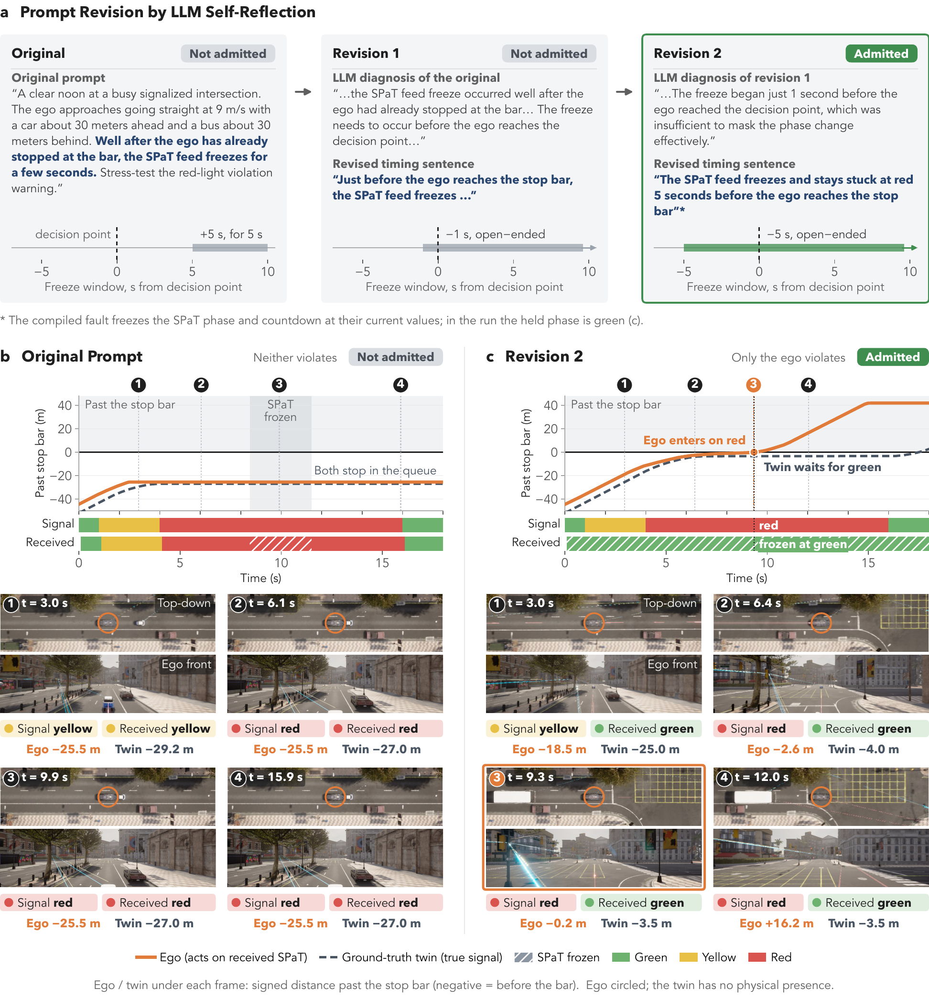
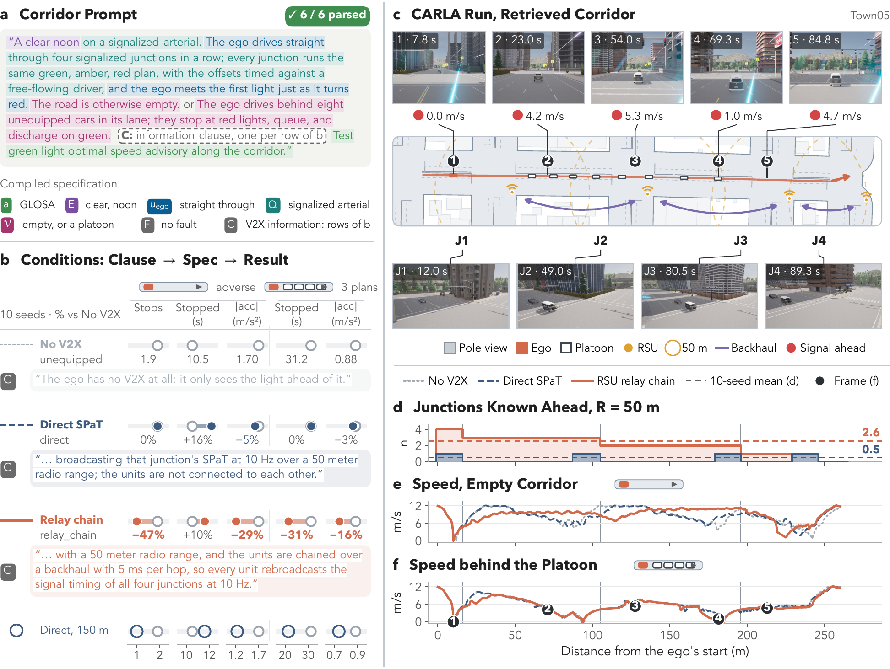
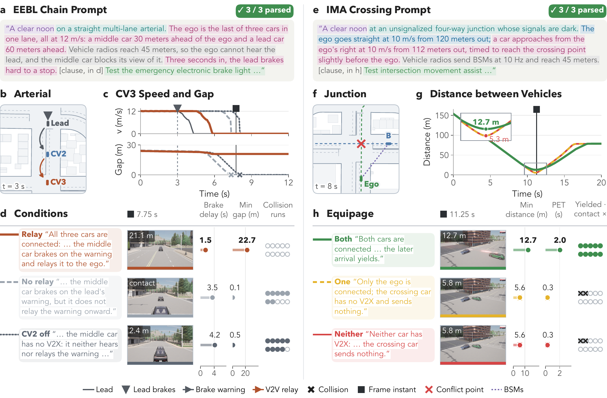

8 towns · 6 V2X apps
healthy communication
after refinement
twin rollouts
How it works
Four modules turn one prompt into a verified, minimal failure case.
LLM Agent Analysis
Compiles the prompt into a typed spec; an Age-of-Information check rejects faults that cannot matter.
Scenario Grounding
Retrieves roadway, V2X and driver knowledge to place the test on a feasible junction.
V2X Scenario Synthesis
Runs SPaT, MAP and BSM over a spatial channel with delay, loss, skew and wrong content.
Scenario Refinement
Search and LLM self-reflection repair ineffective tests; delta debugging minimizes the rest.
Causal admission rule
failure
Same traffic, same seed; only the V2X information differs.
Three ways V2X information fails
Stale-but-detectable
Loss or delay ages the data; the app can notice and fall back.
Fresh-but-wrong
Messages look current but lie, so the vehicle trusts a wrong state.
Silent-by-absence
A conflicting vehicle never transmits, so it is invisible to the app.
Results
100 plain-language prompts compile, ground and run to completion with zero false failures.


Search and self-reflection turn ineffective fault tests into causally verified failures.


rlvw_late_freeze: reflection moves a mistimed SPaT freeze into the decision window, and the ego now runs the red.An RSU relay chain extends the information horizon past the vehicle's own radio.

Cooperation is measurable, and pairwise: one-sided equipage buys nothing.

BibTeX
@misc{wu2026lastv2x,
author = {Wu, Keshu and Zhang, Hao and Gan, Rui and Li, Pei and Jiang, Jiwan and Zhou, Yang},
title = {{LAST-V2X}: Language-Driven Adaptive Scenario Synthesis and Testing for
Communication-Induced Failures in {V2X} Safety Applications},
year = {2026},
}Previously released as V2XSynth.